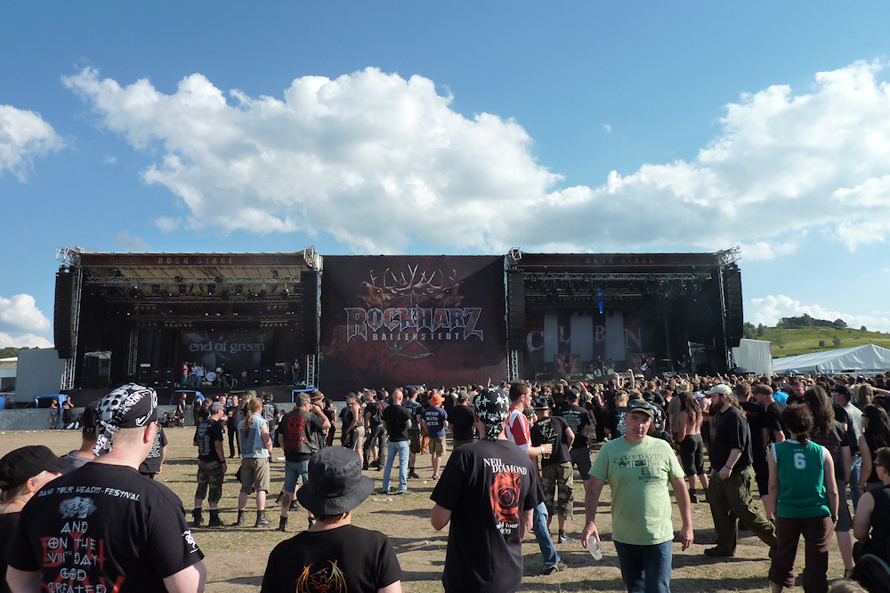
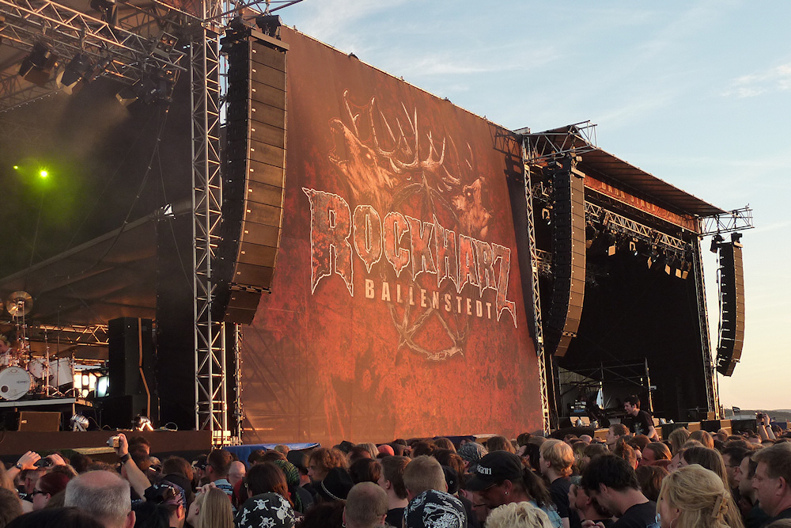
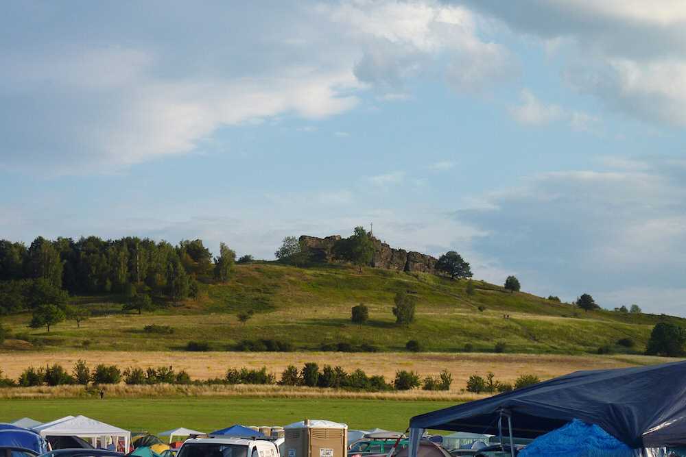

Rock Harz 2011
  
Nachdem ich letztes Jahr ausgerechnet das zur Abwechslung vom Hochsommer heimgesuchte Rock Harz verpasst habe, gab es 2011 nun die Rückkehr zum Festival an der Teufelsmauer. Und zum allerersten Mal bei einem meiner Besuche hat auch das Wetter mitgespielt: Regen fiel nur in der ersten Nacht, der Wind hielt sich angenehm zurück und ansonsten dominierte Sonnenschein mit vereinzelten Wolken. Ebenfalls zurückgefunden zum Rock Harz haben zur Freude vor allem der weiblichen Besucher die gespülten Toiletten, wenngleich für diesen Luxus in (natürlich schwarzen) Wertmarken im Wert von einem Euro bezahlt werden muss.
Nachdem vor zwei Jahren noch Hexen auf den Festival-Shirts zu sehen waren, ist das Rock Harz 2011 mit seinen tollwütig blickenden Hirschen auf dem Logo optisch deutlich näher an die größere Konkurrenz herangerückt. Die Zeichen stehen also auf Wachstum. Trotzdem - oder zum Glück - ist die Anzahl der Besucher gefühlt nicht größer geworden, so dass zum Einen die Wege auf Campingplatz und Festivalgelände angenehm kurz blieben und auch bei den Headliner immer die Chance bestand, sich bis ganz nach vorne vor die Bühne zu kämpfen. Diese angenehme Größe ist der Hauptgrund, weshalb es mich immer wieder zum Rock Harz zieht.
Denn musikalisch war wieder eher kennenlernen als mitsingen angesagt. Der Donnerstag war gleich ein Totalausfall. Stratovarius, Hypocrisy, Frei.Wild - alles nicht meine Musik. Am Besten gefielen mir noch die Hardcorer von Pro-Pain, doch ansonsten konnte ich weder mit den Nachmittagsband noch mit den Headlinern etwas anfangen.
Besser lief es dann am Freitag. Schon 14:00h überraschten The Sorrow positiv, eine mir bis dahin unbekannte österreichische Metalcore-Band. Sie schlugen in ähnlich derbes Holz wie später Caliban, leisteten es sich aber als eine der wenigen Bands auf dem Rock Harz die Eigenart, nicht in schwarzen Klamotten aufzutreten. Ebenso abheben vom Metal-Einerlei wollten sich wohl auch We butter the bread with butter mit ihren weißen T-Shirts. Ich hatte vor Jahren einmal ihre Kinderlieder-Cover auf Youtube gesehen und war ganz überrascht, fünf statt der ursprünglichen zwei Musiker auf der Bühne zu sehen. Da sich der wirre Musikmix aber seit der Gründungsphase der Band deutlich verändert hat, fiel der Auftritt eher enttäuschend aus.
Die Erwartungen getroffen hat dagegen Tarja. Neben dem schon in Nightwish-Zeiten gecoverten Over the hills and far away kannte ich ein paar Lieder von ihrem Soloalbum und wusste so, was auf mich zukommt. Leider besitzen nicht alle Songs dieselbe Qualität, und mit der theatralischen Art der Sängerin auf der Bühne kann ich nicht allzu viel anfangen. Trotzdem war es gutes Konzert, denn die Stimme von Tarja ist einfach umwerfend. Schade, dass sie ihre beiden Vorbands von der zurückliegenden Tour, Leaves’ Eyes und Kells, nicht mit auf das Rock Harz gebracht hat. Diese hätte ich mir wirklich gerne angesehen.
Eine kleine Anekdote am Rande: Vor zwei Jahren hatte neben uns eine Gruppe Jugendlicher aus dem Hamburger Raum gecampt. Da diese einen Pavillion besaßen und das Wetter schlecht war, hatten wir die eine oder andere Unterhaltung, an die ich mich gar nicht mehr errinern könnte, wenn nicht unser Reporter herausgefunden hätte, dass zwei von ihnen in einer Mittelalterband namens Vogelfrey spielten. Zwei Jahre später hat es die Band nun tatsächlich auf die Bühne des Rock Harz geschafft, wenngleich sie schon Freitag um 11:20h spielen musste.
Auf den Samstag schließlich hatte ich mich am meisten gefreut. Erstmals seit 2006 hatte ich wieder die Chance, die Letzte Instanz live zu sehen. Inzwischen sind fünf Albem unter dem Sänger Holly ins Land gegangen und dementsprechend wurde kein einziges Lied von den Vorgängern gespielt, als noch Elemente von Crossover das Repertoire der Band anreicherten. Geblieben sind allerdings die intelligenten, deutschen Texte, mit denen sie sich von anderen Bands mit Streichinstrumenten abheben. So fand ich mich problemlos in die Lieder hinein und genoss den Auftritt.
Danach folgte ein gewohnt guter Auftritt der Festival-Stammgäste J.B.O., bevor schließlich In Extremo ihren zweiten Headliner-Auftritt nach 2007 hinlegten. Wie immer war der Sound grandios, die Feuershow hervorragend und das gesamte Konzert nah an der Perfektion. Wenn nicht die Band auf die Idee gekommen wäre, trotz Zugabe-Chören fünf Minute kürzer als geplant zu spielen. Dies ist einem Headliner einfach nicht würdig, passt aber zum leicht arroganten Eindruck, den die Band hinterlässt. So spielten sie fast ausnahmslos Lieder vom aktuellen Album, dessen Stücke sich wie auf dem Vorgänger eher als Kopien ihrerselbst präsentieren. Nach Mein rasend Herz hat die Band eher auf Sicherheit mit abwechslungsarmen Songs gesetzt, so dass die wenigen Experimente wie das Cover An end has a start oder Schau zum Mond keinen Platz auf der Bühne haben. Es bleibt deshalb ein fader Beigeschmack an ein eigentlich tolles Konzert zurück.
Zusammengefasst hat es sich aber wieder gelohnt, das Rock Harz zu besuchen. Der Wechsel zwischen den Zwillingsbühnen ging diesmal bis auf den Auftritt von Tyr, die nur vier Lieder spielen konnten, problemlos vonstatten und alle anderen Bands begannen pünktlich - ein Lob für diese tolle Organisation. Ob mir jedoch die Idee gefällt, die Headliner schon um Mitternacht enden zu lassen und danach noch zwei kleinere Bands bis in die Nacht spielen zu lassen, kann ich nicht mit Sicherheit sagen. Für das nächste Jahr wünsche ich mir aber endlich den Auftritt der Emil Bulls, die 2011 noch absagen mussten!